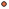

<!doctype html>
<html lang="en">
    <head>
        <meta charset="utf-8">
        <meta http-equiv="X-UA-Compatible" content="IE=edge">
        <meta name="viewport" content="initial-scale=1,user-scalable=no,maximum-scale=1,width=device-width">
        <meta name="mobile-web-app-capable" content="yes">
        <meta name="apple-mobile-web-app-capable" content="yes">
        <link rel="stylesheet" href="css/leaflet.css">
        <link rel="stylesheet" href="css/qgis2web.css"><link rel="stylesheet" href="css/fontawesome-all.min.css">
        <link rel="stylesheet" href="css/MarkerCluster.css">
        <link rel="stylesheet" href="css/MarkerCluster.Default.css">
        <link rel="stylesheet" href="css/leaflet-control-geocoder.Geocoder.css">
        <style>
        #map {
            width: 1483px;
            height: 817px;
        }
        </style>
        <title></title>
    </head>
    <body>
        <div id="map">
        </div>
        <script src="js/qgis2web_expressions.js"></script>
        <script src="js/leaflet.js"></script>
        <script src="js/leaflet.rotatedMarker.js"></script>
        <script src="js/leaflet.pattern.js"></script>
        <script src="js/leaflet-hash.js"></script>
        <script src="js/Autolinker.min.js"></script>
        <script src="js/rbush.min.js"></script>
        <script src="js/labelgun.min.js"></script>
        <script src="js/labels.js"></script>
        <script src="js/leaflet-control-geocoder.Geocoder.js"></script>
        <script src="js/leaflet.markercluster.js"></script>
        <script src="data/CSV_Tourist3_1.js"></script>
        <script>
        var map = L.map('map', {
            zoomControl:true, maxZoom:28, minZoom:1
        }).fitBounds([[5.910960947520552,87.76077268053281],[20.808494866620556,114.83224229303234]]);
        var hash = new L.Hash(map);
        map.attributionControl.setPrefix('<a href="https://github.com/tomchadwin/qgis2web" target="_blank">qgis2web</a> &middot; <a href="https://leafletjs.com" title="A JS library for interactive maps">Leaflet</a> &middot; <a href="https://qgis.org">QGIS</a>');
        var autolinker = new Autolinker({truncate: {length: 30, location: 'smart'}});
        var bounds_group = new L.featureGroup([]);
        function setBounds() {
        }
        map.createPane('pane_OSMStandard_0');
        map.getPane('pane_OSMStandard_0').style.zIndex = 400;
        var layer_OSMStandard_0 = L.tileLayer('http://tile.openstreetmap.org/{z}/{x}/{y}.png', {
            pane: 'pane_OSMStandard_0',
            opacity: 1.0,
            attribution: '<a href="https://www.openstreetmap.org/copyright">© OpenStreetMap contributors, CC-BY-SA</a>',
            minZoom: 1,
            maxZoom: 28,
            minNativeZoom: 0,
            maxNativeZoom: 19
        });
        layer_OSMStandard_0;
        map.addLayer(layer_OSMStandard_0);
        function pop_CSV_Tourist3_1(feature, layer) {
            var popupContent = '<table>\
                    <tr>\
                        <td colspan="2">' + (feature.properties['ID'] !== null ? autolinker.link(feature.properties['ID'].toLocaleString()) : '') + '</td>\
                    </tr>\
                    <tr>\
                        <td colspan="2">' + (feature.properties['NAME_T'] !== null ? autolinker.link(feature.properties['NAME_T'].toLocaleString()) : '') + '</td>\
                    </tr>\
                    <tr>\
                        <td colspan="2">' + (feature.properties['NAME_E'] !== null ? autolinker.link(feature.properties['NAME_E'].toLocaleString()) : '') + '</td>\
                    </tr>\
                    <tr>\
                        <td colspan="2">' + (feature.properties['Lat'] !== null ? autolinker.link(feature.properties['Lat'].toLocaleString()) : '') + '</td>\
                    </tr>\
                    <tr>\
                        <td colspan="2">' + (feature.properties['Long'] !== null ? autolinker.link(feature.properties['Long'].toLocaleString()) : '') + '</td>\
                    </tr>\
                    <tr>\
                        <td colspan="2">' + (feature.properties['Tourist type'] !== null ? autolinker.link(feature.properties['Tourist type'].toLocaleString()) : '') + '</td>\
                    </tr>\
                    <tr>\
                        <td colspan="2">' + (feature.properties['StudentID'] !== null ? autolinker.link(feature.properties['StudentID'].toLocaleString()) : '') + '</td>\
                    </tr>\
                    <tr>\
                        <td colspan="2">' + (feature.properties['จำนวนนักท่องเที่ยว'] !== null ? autolinker.link(feature.properties['จำนวนนักท่องเที่ยว'].toLocaleString()) : '') + '</td>\
                    </tr>\
                    <tr>\
                        <td colspan="2">' + (feature.properties['field_9'] !== null ? autolinker.link(feature.properties['field_9'].toLocaleString()) : '') + '</td>\
                    </tr>\
                    <tr>\
                        <td colspan="2">' + (feature.properties['field_10'] !== null ? autolinker.link(feature.properties['field_10'].toLocaleString()) : '') + '</td>\
                    </tr>\
                    <tr>\
                        <td colspan="2">' + (feature.properties['field_11'] !== null ? autolinker.link(feature.properties['field_11'].toLocaleString()) : '') + '</td>\
                    </tr>\
                    <tr>\
                        <td colspan="2">' + (feature.properties['field_12'] !== null ? autolinker.link(feature.properties['field_12'].toLocaleString()) : '') + '</td>\
                    </tr>\
                    <tr>\
                        <td colspan="2">' + (feature.properties['field_13'] !== null ? autolinker.link(feature.properties['field_13'].toLocaleString()) : '') + '</td>\
                    </tr>\
                </table>';
            layer.bindPopup(popupContent, {maxHeight: 400});
        }

        function style_CSV_Tourist3_1_0(feature) {
            if (feature.properties['จำนวนนักท่องเที่ยว'] >= 0.000000 && feature.properties['จำนวนนักท่องเที่ยว'] <= 28000.000000 ) {
                return {
                pane: 'pane_CSV_Tourist3_1',
                radius: 2.0,
                opacity: 1,
                color: 'rgba(35,35,35,1.0)',
                dashArray: '',
                lineCap: 'butt',
                lineJoin: 'miter',
                weight: 1,
                fill: true,
                fillOpacity: 1,
                fillColor: 'rgba(231,113,72,1.0)',
                interactive: true,
            }
            }
            if (feature.properties['จำนวนนักท่องเที่ยว'] >= 28000.000000 && feature.properties['จำนวนนักท่องเที่ยว'] <= 178800.000000 ) {
                return {
                pane: 'pane_CSV_Tourist3_1',
                radius: 5.5,
                opacity: 1,
                color: 'rgba(35,35,35,1.0)',
                dashArray: '',
                lineCap: 'butt',
                lineJoin: 'miter',
                weight: 1,
                fill: true,
                fillOpacity: 1,
                fillColor: 'rgba(231,113,72,1.0)',
                interactive: true,
            }
            }
            if (feature.properties['จำนวนนักท่องเที่ยว'] >= 178800.000000 && feature.properties['จำนวนนักท่องเที่ยว'] <= 580000.000000 ) {
                return {
                pane: 'pane_CSV_Tourist3_1',
                radius: 9.0,
                opacity: 1,
                color: 'rgba(35,35,35,1.0)',
                dashArray: '',
                lineCap: 'butt',
                lineJoin: 'miter',
                weight: 1,
                fill: true,
                fillOpacity: 1,
                fillColor: 'rgba(231,113,72,1.0)',
                interactive: true,
            }
            }
            if (feature.properties['จำนวนนักท่องเที่ยว'] >= 580000.000000 && feature.properties['จำนวนนักท่องเที่ยว'] <= 1095000.000000 ) {
                return {
                pane: 'pane_CSV_Tourist3_1',
                radius: 12.5,
                opacity: 1,
                color: 'rgba(35,35,35,1.0)',
                dashArray: '',
                lineCap: 'butt',
                lineJoin: 'miter',
                weight: 1,
                fill: true,
                fillOpacity: 1,
                fillColor: 'rgba(231,113,72,1.0)',
                interactive: true,
            }
            }
            if (feature.properties['จำนวนนักท่องเที่ยว'] >= 1095000.000000 && feature.properties['จำนวนนักท่องเที่ยว'] <= 20411682.000000 ) {
                return {
                pane: 'pane_CSV_Tourist3_1',
                radius: 16.0,
                opacity: 1,
                color: 'rgba(35,35,35,1.0)',
                dashArray: '',
                lineCap: 'butt',
                lineJoin: 'miter',
                weight: 1,
                fill: true,
                fillOpacity: 1,
                fillColor: 'rgba(231,113,72,1.0)',
                interactive: true,
            }
            }
        }
        map.createPane('pane_CSV_Tourist3_1');
        map.getPane('pane_CSV_Tourist3_1').style.zIndex = 401;
        map.getPane('pane_CSV_Tourist3_1').style['mix-blend-mode'] = 'normal';
        var layer_CSV_Tourist3_1 = new L.geoJson(json_CSV_Tourist3_1, {
            attribution: '',
            interactive: true,
            dataVar: 'json_CSV_Tourist3_1',
            layerName: 'layer_CSV_Tourist3_1',
            pane: 'pane_CSV_Tourist3_1',
            onEachFeature: pop_CSV_Tourist3_1,
            pointToLayer: function (feature, latlng) {
                var context = {
                    feature: feature,
                    variables: {}
                };
                return L.circleMarker(latlng, style_CSV_Tourist3_1_0(feature));
            },
        });
        var cluster_CSV_Tourist3_1 = new L.MarkerClusterGroup({showCoverageOnHover: false,
            spiderfyDistanceMultiplier: 2});
        cluster_CSV_Tourist3_1.addLayer(layer_CSV_Tourist3_1);

        bounds_group.addLayer(layer_CSV_Tourist3_1);
        cluster_CSV_Tourist3_1.addTo(map);
        var osmGeocoder = new L.Control.Geocoder({
            collapsed: true,
            position: 'topleft',
            text: 'Search',
            title: 'Testing'
        }).addTo(map);
        document.getElementsByClassName('leaflet-control-geocoder-icon')[0]
        .className += ' fa fa-search';
        document.getElementsByClassName('leaflet-control-geocoder-icon')[0]
        .title += 'Search for a place';
        var baseMaps = {};
        L.control.layers(baseMaps,{'CSV_Tourist3<br /><table><tr><td style="text-align: center;"></td><td>0 - 28000</td></tr><tr><td style="text-align: center;"></td><td>28000 - 178800</td></tr><tr><td style="text-align: center;"></td><td>178800 - 580000</td></tr><tr><td style="text-align: center;"></td><td>580000 - 1095000</td></tr><tr><td style="text-align: center;"></td><td>1095000 - 20411682</td></tr></table>': cluster_CSV_Tourist3_1,"OSM Standard": layer_OSMStandard_0,},{collapsed:false}).addTo(map);
        setBounds();
        </script>
    </body>
</html>
